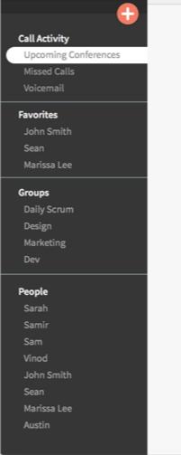
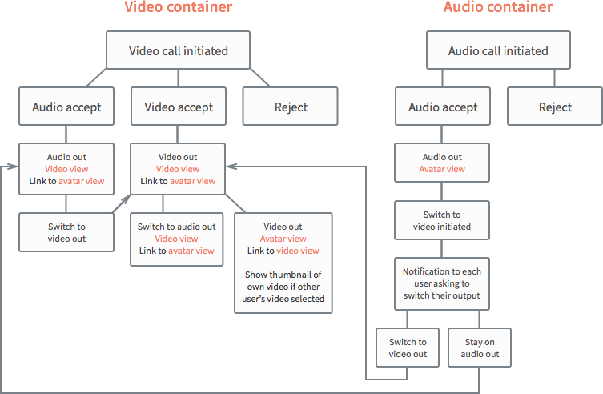
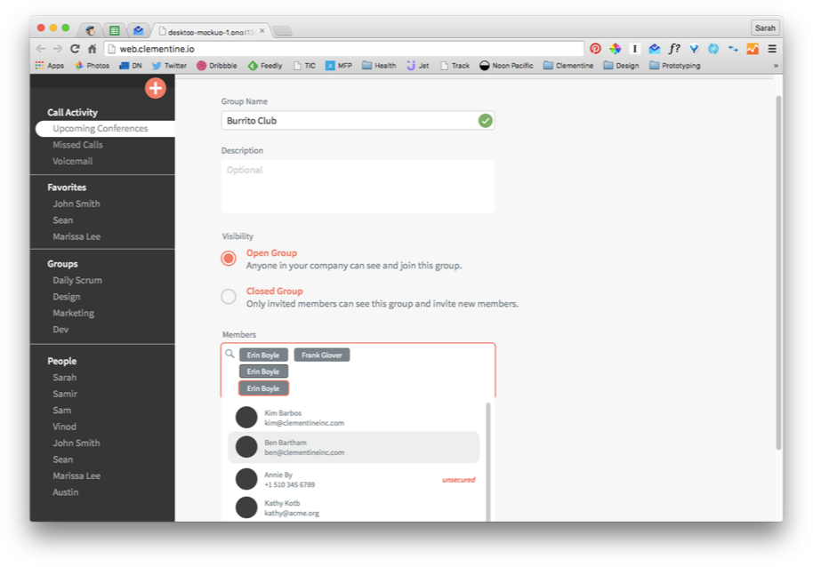

Goal
A full-fledged desktop app was something that Clementine had been sorely lacking. When the design team first started the project, the desktop app was in beta and didn’t support much beyond the core communication features: messaging and conference calling.
A desktop app was important because we wanted to support customers through their entire range of work communications. This would include features like video conferencing and screen sharing, which are less suitable for mobile.
Our task was to design the entire structure of the desktop app. We thought especially about:
- Sidebar and navigation organization: What information should be present in the sidebar? How do we port a conference-call focused navigation on the mobile app to desktop?
- How messaging and conference calling behaviors differ between mobile and desktop
- What affordances to provide when the mobile and desktop experiences didn’t completely match
Product Analysis
I looked at consumer-focused and enterprise video-conferencing apps to get a sense of how other products incorporate messaging and video calls. The vast majority keep messaging as the focus on desktop and de-emphasize conference calls.
-
 Hall
Hall -
 Hangouts
Hangouts -
 Messenger
Messenger -
 Slack
Slack -
 Spark
Spark -
 Switch
Switch
Looking at how message threads are organized in the apps was especially helpful. Enterprise apps generally took an “address book” approach, organizing message threads by type (groups or individuals) and by alphabet.
Most of the consumer apps took an “activity log” approach, listing messages by time. This approach seems more useful with a larger scale of contacts and frequency of messaging, where users have to rely on search or chronological context to find message threads.
Sketching
During sketching, I focused on how features on the mobile app would map to desktop and how the UI would respond to changes in the state of the app, such as when a conference call starts.
For multi-tasking, we wanted messaging and navigation to still be accessible while a conference call was ongoing. In my sketches, I explored how the screen could be segmented to allow for that.
I kept the sketching process as low-level as possible since each person on the design team was working on large portions of the app simultaneously. We wanted the final design to be cohesive, so we made sure to agree on broad strokes of the design first before moving into finer details.
UX Structure
Because desktop behaviors and conventions differ from mobile, we discussed the structure of two particular features at length: sidebar navigation and conference calls.
For the sidebar, we decided that taking the “address book” approach to listing message threads would be appropriate for our app. Since groups had their own tab in the mobile app, it made sense that they would be separate from individuals on desktop. We also borrowed from Material Design and included a floating action button. This allowed people to start messages or calls from anywhere in the app.

In-progress mock-up of sidebar
Compared to mobile, the flow for conference calls on desktop was complicated by the possibility of video conferencing. To make sure I would cover all bases when designing the conference call flow, I drew up a task flowchart to map out the range of possibilities:

This flow allows for flexibility with:
- People with limited bandwidth who only need to view one video stream at a time
- Switching an audio conference to a video conference
- Accommodating both people connecting with audio-only through mobile and people connecting with video through desktop
Wireframing & Feedback
We still kept designs low-fidelity when discussing with the rest of the team. Arranging the wireframes on a whiteboard made it easier to guide the whole Clementine team through the design. This allowed for a very iterative process since flows and screens throughout the app could be revised and replaced quickly.
Arranging screens like this also made it obvious where interactions and UI elements in the app could be more cohesive. We found inconsistencies especially with contact/group profiles and list structures.
With conference calls, it became clear that more could be done to simplify the experience. Decreasing the number of options to personalize the conference interface (e.g., opening a new window for a conference, turning off others’ video streams) could help decrease the stress and distraction someone might face going into a call.
What’s Next?

The Clementine desktop app is still a work in progress, and I’ve started creating preliminary mockups. While we’ve worked on much of the UX structure for the app, there’s still more thinking to be done around actual visual hierarchy with color and typography.
I’ll have to revisit iconography, too, since certain icons don’t map especially well from mobile to desktop. With video conferencing involved, icons related to calls and conference calls start to make less sense.
The desktop app design would also be a great place to look more thoughtfully at voice and tone throughout the product. The platform allows for more personality to shine through and provides more avenues for support when customers are confused or in an error state.
While we’ve done a great deal in solidifying the broad strokes of the desktop app, we still have our work cut out for us in fleshing out the finer details.